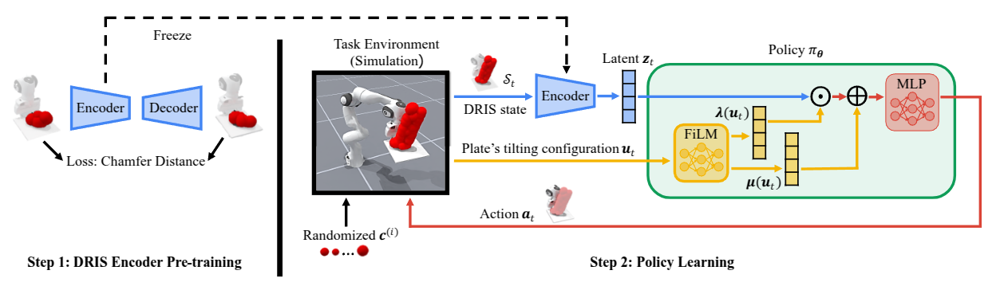
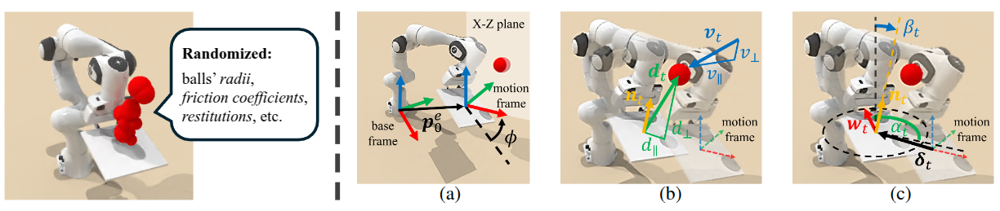
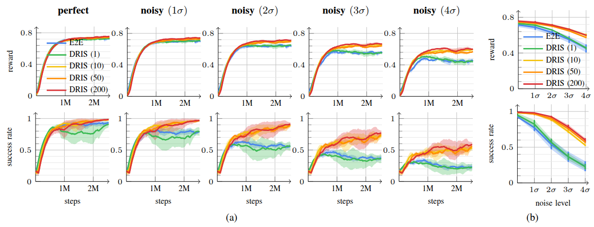
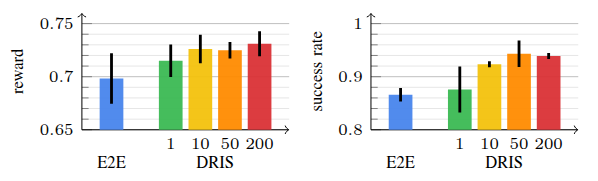
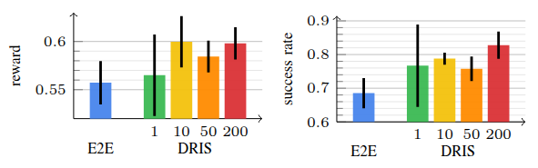
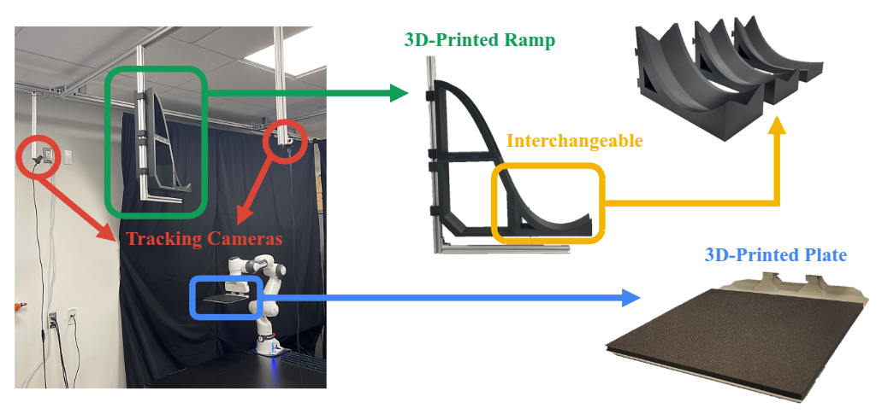
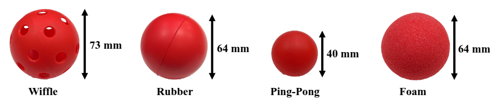

Dexterous manipulation is physics-intensive and highly sensitive to modeling errors and perception noise, making sim-to-real transfer prohibitively challenging. Domain randomization (DR) is commonly used to improve the robustness of learned policies for such tasks, but conventional DR randomizes one instance per episode, offering very limited exposure to the variability of real-world dynamics.
To this end, we propose Domain-Randomized Instance Set (DRIS), which represents and propagates a set of randomized instances simultaneously, providing richer approximation of uncertain dynamics and enabling policies to learn actions that account for multiple possible outcomes. Supported by theoretical analysis, we show that DRIS yields more robust policies and alleviates the need for real-world fine-tuning, even with a modest number of instances (e.g., 10).
We demonstrate this on a challenging reactive catching task. Unlike traditional catching setups that use end-effectors designed to mechanically stabilize the object (e.g., curved or enclosing surfaces), our system uses a flat plate that offers no passive stabilization, making the task highly sensitive to noise and requiring rapid reactive motions. The learned policies exhibit strong robustness to uncertainties and achieve reliable zero-shot sim-to-real transfer.

Pipeline figure (static/media/pipeline.png)Step 1: Pre-train the DRIS encoder via autoencoder reconstruction. Step 2: Train a FiLM-conditioned policy via RL using the frozen encoder.

Problem setup figure (static/media/setup.png)The robot must intercept an incoming ball and stabilize it on a flat, low-friction plate — no passive mechanical stabilization is provided. A compact motion frame aligned with the ball's incoming direction captures state (relative displacement & velocity) and action (plate translation & tilt). Four physical parameters are randomized in DRIS: ball radius, static friction, dynamic friction, and restitution coefficient.
We compare DRIS (N = 1, 10, 50, 200) against an end-to-end (E2E) RL baseline under three sources of uncertainty: observation noise, execution error, and out-of-distribution physics.

Observation noise results (static/media/obs_noise.png)Training curves and final performance under increasing Gaussian observation noise (σ to 4σ). DRIS with N ≥ 10 maintains substantially higher success rates as noise increases.

Execution error figure (static/media/exec_error.png)DRIS outperforms E2E under joint position perturbations of ±0.05 rad.

OOD physics figure (static/media/ood_physics.png)DRIS generalizes to balls with unseen restitution values [0.7, 0.8] (trained on [0.4, 0.7]).
Policies trained purely in simulation are deployed zero-shot on a 7-DoF Franka Research 3 robot. We test across four ball types (wiffle, rubber, ping-pong, foam) and three ramp speeds (R = 0.13, 0.20, 0.32 m), for 60 trials per policy. Ball 3D state is estimated at 80 FPS using two cameras and parabolic curve fitting.

3 different ramps

4 different balls
| Ball | Ramp (R) | VelTrack | E2E | DRIS (Ours) |
|---|---|---|---|---|
| Wiffle | 0.13 m | 0/5 | 0/5 | 5/5 |
| 0.20 m | 0/5 | 2/5 | 4/5 | |
| 0.32 m | 0/5 | 0/5 | 3/5 | |
| Rubber | 0.13 m | 0/5 | 0/5 | 2/5 |
| 0.20 m | 0/5 | 0/5 | 5/5 | |
| 0.32 m | 0/5 | 1/5 | 2/5 | |
| Ping-Pong | 0.13 m | 0/5 | 1/5 | 4/5 |
| 0.20 m | 2/5 | 1/5 | 5/5 | |
| 0.32 m | 0/5 | 0/5 | 4/5 | |
| Foam | 0.13 m | 0/5 | 0/5 | 2/5 |
| 0.20 m | 1/5 | 1/5 | 3/5 | |
| 0.32 m | 0/5 | 2/5 | 2/5 | |
| Total | 3/60 | 8/60 | 41/60 | |
| Success Rate | 0.05 | 0.13 | 0.68 | |